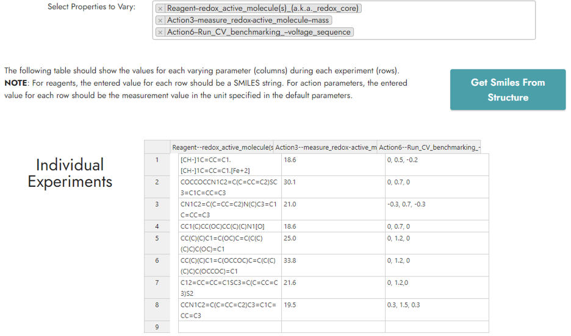

ExpFlow Robotic Workflows
Building a Template
A customizable ExpFlow Template lists the reagent types, apparatus items, instrument types, and workflow actions of an experimental protocol. A researcher uses a web-based user interface with buttons and dropdown menus to create a Template.
An ExpFlow Template converts experimental procedures into graphs that contain data provenances. The Template has categories for reagent (e.g., redox material, solvent), apparatus (e.g., beaker, electrode) and instrument (e.g., potentiostat, spectrometer). In a Template graph, nodes (the reagent, apparatus, and instrument categories) are connected by edges that correspond to actions (e.g., dispense, heat). Each action contains a start position, an end position, and action parameters (e.g., volume for dispensing liquid, temperature for heating, etc.). As the actions are sequenced, ExpFlow graphs capture the action provenances.
For example, a CV experiment to determine the diffusion coefficient might include redox-active molecule and solvent reagents, a beaker/vial apparatus, and a potentiostat (Figure 2). Workflow actions might include transferring the liquid solvent and solid solute to the beaker, heating and stirring the solution, measuring the working electrode surface area, and collecting CV data. In this example, the user might add five collect-CV-data actions because the experiment includes five CV scans, each performed at a different scan rate. Although the Template can take time and effort to produce, it can be reused for all related and subsequent experiments.
For example, a CV experiment to determine the diffusion coefficient might include redox_molecule and solvent reagents; beaker, and electrochemical_cell apparatus, and a potentiostat instrument. Workflow actions might include transfer_liquid (start position = solvent and end position = beaker), transfer_solid (start position = redox_molecule and end position = beaker), heat_stir (start and end position = beaker), and collect_cv_data (start position = beaker and end position = electrochemical_cell). There may be multiple data collection actions. For example, in this example, the scientist might add five collect_cv_data actions because the experiment includes five CVs, each run at a different scan rate. Each action incorporates a standard action type, starting and ending positions, and a brief description. Although these templates take time and effort to produce, they can be reused for all related experiments. Additionally, an existing templated can be cloned and modified, limiting the amount of time needed to construct new templates. Templates can also be shared among ExpFlow users.
Create new Template
To create a new Template, navigate to Templates -> New Template. Enter your Template name and mark is as public or not.
Add materials (reagents, apparatus, and instruments)
Add all your materials. Select the type of material you would like to add (blue cursor in image below), then fill in the information about your material. Finally, add the material (orange cursor in image below). Repeat until all materials are added.
Add actions
Select Add Action (purple cursor in image below), then fill in the information about your action. Note the sequence. If the sequence is higher than the existing number of actions, the action will be placed as the last action. Otherwise, it will be inserted at the specified sequence, pushing all the subsequent actions down. Add the action and repeat until all actions are added.
Important notes for building a Template for Robotic Workflows
Whenever creating a Template, select
View Action Type Descriptionsfor descriptions of each actions and for constrains on using each action. Always check the action constrains before using it.Remember that the base Template protocol will correspond to one of the parallel robotic experiments. Importantly, each experiment takes place in once vial, so your Template protocol should all take place in one vial.
Because each experiment takes place in one vial, be sure that the total volume your Template adds is not more than the volumetric capacity of an experiment vial!
Use Template for Robotic Workflow
A Template can be adapted to a Robotic Workflow. After building a template, navigate to the template details page and select Use For Robotics. You must be logged in to view this button. If this button does not appear, you may not have the correct permissions.
Set default parameters
After creating a Workflow, the researcher indicates default measurements for all preparation steps and specifies parameters for all data collection steps. Notably, not all properties need to be specified. For every property left blank, the robotic system will use the default parameters specified in the Settings.
Establish variable parameters
Then, the researcher selects one or more parameters to vary. These variable parameters become the columns of a table with n rows, where the researcher specifies the variable parameter values for each of n experiments. ExpFlow then produces a machine-readable workflow for n identically structured experiments where one or more measurement parameters varies for each experiment. In the example below, three variable properties are selected. The resulting workflow will contain eight parallel experiments, where the redox active molecule, starting mass, and voltage sequence varies for each experiment.
Download robotic workflow
Navigate to All Workflows, and select download for your Robotic Workflows. This will download the workflow as a JSON file.